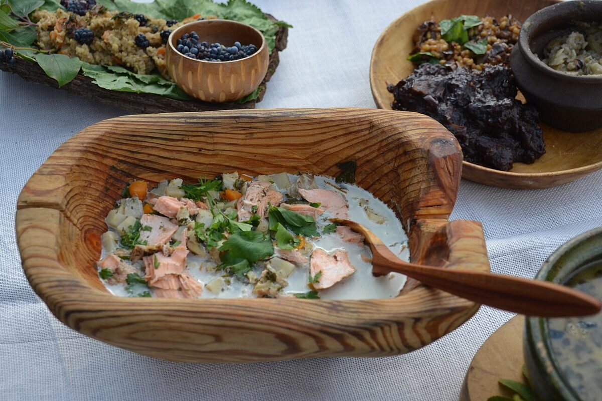

Filozofia: nic się nie marnuje
Dlaczego głowy i kręgosłupy to skarb
Po wyfiletowaniu ryby na desce zostaje pozornie bezwartościowy szkielet: głowa, kręgosłup z resztkami mięsa, płetwy i ścinki. Tymczasem to właśnie w głowach i ościach kryje się najwięcej kolagenu i substancji smakowych, których nie da się wydobyć z samego fileta. Wywar gotowany na tych częściach jest gęstszy, bardziej aromatyczny i po schłodzeniu tężeje w naturalną galaretkę — znak, że wyciągnęliśmy z ryby wszystko. Dobry wędkarz-kucharz traktuje więc filetowanie jako początek dwóch dań: fileta na patelnię i zupy z reszty. Z jednego udanego połowu okoni czy sandaczy wychodzi w ten sposób pełny obiad bez wyrzucania czegokolwiek.
Które ryby na wywar
Najlepsze wywary dają ryby o białym, chudym mięsie: okoń, sandacz, szczupak, jazgarz (klasyka uchy), a także karp i lin, które dodają wywarowi treściwości. Głowy i kręgosłupy różnych gatunków można śmiało mieszać — zupa zyskuje na złożoności. Ostrożnie z rybami bardzo tłustymi (węgorz, tłusta makrela): ich tłuszcz potrafi zdominować i zmętnić wywar, lepiej zostawić je do wędzenia. Ścinki i resztki można zbierać w zamrażarce z kilku wypraw, aż uzbiera się kilogram na porządny garnek.
Przygotowanie głów — skrzela muszą zniknąć
Najważniejsza zasada: z każdej głowy bezwzględnie usuwamy skrzela. Skrzela są filtrem ryby — gromadzą krew, muł i zanieczyszczenia, a gotowane dają gorzki, mulisty posmak i mętny, szarawy wywar. Wycinamy je nożyczkami lub wyrywamy palcami (uwaga na ostre krawędzie pokryw skrzelowych, zwłaszcza u okonia i sandacza). Wielu kucharzy usuwa też oczy, które mętnieją w gotowaniu i mogą dawać nieprzyjemny osad. Tak oczyszczone głowy i kręgosłupy płuczemy dokładnie pod zimną, bieżącą wodą z resztek krwi i błon — skrzepy krwi przy kręgosłupie warto wyskrobać łyżeczką. Czysty surowiec to warunek klarownej, czystej w smaku zupy.
Bazowy wywar rybny
Składniki na ok. 2–2,5 l wywaru
- ok. 1 kg głów (bez skrzeli!), kręgosłupów i ścinek z filetowania
- włoszczyzna: 2 marchewki, 1 pietruszka, kawałek selera, kawałek pora
- 1 duża cebula, opalana nad płomieniem lub na suchej patelni do zwęglenia powierzchni
- 2 liście laurowe
- 3–4 ziarna ziela angielskiego
- 6–8 ziaren czarnego pieprzu
- ok. 2,5 l zimnej wody, 1 płaska łyżeczka soli
Wywar krok po kroku
- Oczyszczone i wypłukane głowy, kręgosłupy i ścinki włóż do garnka i zalej zimną wodą — start od zimnej wody powoli wyciąga smak i daje klarowniejszy wywar.
- Doprowadź powoli prawie do wrzenia na średnim ogniu (ok. 10–15 min) i starannie zbierz łyżką cedzakową szumowiny, które zbiorą się na powierzchni.
- Dodaj włoszczyznę, opalaną cebulę, liść laurowy, ziele angielskie, pieprz i sól.
- Gotuj na minimalnym ogniu, bez przykrycia, tak by wywar ledwie „mrugał" — 30–40 minut i ani minuty dłużej. W przeciwieństwie do rosołu wywar rybny gotowany ponad godzinę robi się gorzki i mętny, bo oście zaczynają oddawać garbniki i wapno.
- Odstaw garnek na 10 minut, po czym przecedź wywar przez sito wyłożone gazą lub czystą ściereczką. Nie wyciskaj resztek — zmętnią płyn.
- Z głów i kręgosłupów obierz pozostałe mięso (bez ości!) — przyda się jako wkładka. Wywar użyj od razu albo zamroź w pojemnikach do 3 miesięcy.
Ucha po polsku — klarowna zupa rybna
Czym jest ucha
Ucha to rosyjska i kresowa klasyka: maksymalnie klarowna, esencjonalna zupa rybna, w której smak ryby gra pierwsze skrzypce, a dodatków jest niewiele. Tradycyjnie gotowana w kociołku nad ogniskiem prosto z połowu — najlepiej z kilku gatunków, w tym drobnicy (jazgarze, małe okonie) na wywar i szlachetniejszej ryby (sandacz, szczupak) na wkładkę. W wersji domowej doskonale wychodzi na opisanym wyżej wywarze bazowym.
Składniki na 4 porcje
- 1,5 l przecedzonego bazowego wywaru rybnego
- 300–400 g filetów z sandacza, okonia lub szczupaka, pokrojonych w duże kostki
- 3–4 średnie ziemniaki pokrojone w kostkę
- 1 marchewka w plasterkach
- 1 mała cebula w drobnej kostce
- liść laurowy, kilka ziaren pieprzu
- sól, świeżo mielony pieprz, pęczek koperku i natki pietruszki
- opcjonalnie: 25–50 ml czystej wódki (wariant tradycyjny)
Ucha krok po kroku
- Przecedzony wywar doprowadź do delikatnego wrzenia, dodaj ziemniaki, marchewkę, cebulę, liść laurowy i pieprz w ziarnach.
- Gotuj na małym ogniu 12–15 minut, aż ziemniaki będą prawie miękkie.
- Dopraw solą i pieprzem, zmniejsz ogień tak, by zupa ledwie się gotowała.
- Włóż kostki fileta i gotuj bardzo delikatnie 5–7 minut — mięso ma się ściąć na biało, ale nie rozpaść.
- Wariant tradycyjny: na sam koniec wlej kieliszek czystej wódki (25–50 ml) i gotuj jeszcze minutę. Alkohol odparuje, a wódka — jak chce tradycja — „wyostrza" smak i klaruje zupę.
- Zdejmij z ognia, odstaw pod przykryciem na 5 minut, podawaj hojnie posypaną koperkiem i natką. Uchy się nie zabiela i nie zagęszcza — ma być czysta jak łza.
Halászlé po polsku — węgierska ognista zupa rybna
Czym jest halászlé
Halászlé (czyt. „halaslee", dosłownie „zupa rybacka") to duma kuchni węgierskiej znad Dunaju i Cisy: gęsta, intensywnie czerwona i wyraźnie pikantna zupa na bazie ogromnej ilości cebuli i papryki w proszku, tradycyjnie gotowana z karpia. Jej sekretem jest dwustopniowość: najpierw rozgotowuje się bazę z głów, ości i cebuli i przeciera ją przez sito, a dopiero w tak powstałym gęstym, paprykowym wywarze dogotowuje dzwonka lub filety. Karp z polskich wód nadaje się do niej idealnie.
Składniki na 4–6 porcji
- 1 karp ok. 1,5 kg — głowa (bez skrzeli), kręgosłup i ścinki na bazę, filety lub dzwonka na wkładkę
- 3–4 duże cebule, drobno posiekane (cebuli ma być naprawdę dużo — to ona zagęszcza zupę)
- 2–3 łyżki słodkiej papryki w proszku (najlepiej węgierskiej)
- 0,5–1 łyżeczki ostrej papryki w proszku (do smaku)
- 1 dojrzały pomidor i 1 świeża papryka, pokrojone w kostkę
- ok. 2 l wody, sól, ewentualnie 1 łyżka smalcu lub oleju
Halászlé krok po kroku
- Głowę, kręgosłup, ścinki i posiekaną cebulę włóż do garnka, dodaj pomidor i świeżą paprykę, zalej zimną wodą i posól.
- Gotuj na małym ogniu 45–60 minut, aż cebula zupełnie się rozpadnie, a mięso odejdzie od ości. (Baza, w odróżnieniu od klarownego wywaru, ma się rozgotować — gorycz neutralizuje tu papryka i cebula, ale skrzela i tak usuwamy zawsze.)
- Zdejmij z ognia. Wybierz największe kości, a resztę przetrzyj porcjami przez sito, dociskając łyżką — przecieranie bazy to serce przepisu; ma powstać gęsty, aksamitny krem z cebuli i resztek mięsa.
- Przetartą bazę zagotuj ponownie. Odsuń garnek z ognia, wmieszaj słodką i ostrą paprykę (papryka palona wprost na dużym ogniu gorzknieje), wymieszaj i wróć na mały ogień na 5 minut.
- Włóż dzwonka lub duże kawałki fileta z karpia i gotuj delikatnie 8–10 minut (dzwonka) lub 5–8 minut (filety), nie mieszając — tylko potrząsając garnkiem, żeby nie rozbić ryby.
- Dopraw solą i ostrą papryką. Podawaj wrzącą, z białym pieczywem; na Węgrzech często z dodatkiem ostrej papryki cseresznye na stole, by każdy doprawił po swojemu.
Wkładka rybna i warianty
Filety zawsze na końcu
Uniwersalna zasada wszystkich zup rybnych: surowe kawałki fileta dodajemy na samym końcu gotowania, do ledwie mrugającego wywaru, na 5–8 minut. Mięso ryb ścina się błyskawicznie — dłuższe gotowanie zamienia jędrne kostki w rozpadające się strzępy i suche włókna. Filety wkładamy w dużych kawałkach (4–5 cm), solimy je lekko pół godziny wcześniej, żeby się ujędrniły, i po dodaniu już nie mieszamy zupy łyżką, tylko delikatnie poruszamy garnkiem. Mięso obrane z głów i kręgosłupów po gotowaniu wywaru dodajemy natomiast tuż przed podaniem — jest już ugotowane, ma się tylko zagrzać.
Wariant: zabielana zupa rybna po polsku
Najbardziej swojska odsłona: bazowy wywar z ziemniakami i marchewką (jak w usze) na koniec zabielamy śmietaną 18% — pół szklanki śmietany hartujemy, mieszając ją z kilkoma łyżkami gorącej zupy, i dopiero wtedy wlewamy do garnka, żeby się nie zwarzyła. Po zabieleniu zupy już nie gotujemy, tylko podgrzewamy. Obowiązkowy jest duży pęczek drobno posiekanego koperku oraz odrobina soku z cytryny dla równowagi. Niektórzy dodają łyżkę masła i zacierkę lub lane kluski — wychodzi sycąca, „mleczna" zupa w stylu mazurskim, idealna dla dzieci, bo łagodna i bez ostrych przypraw.
FAQ — najczęstsze pytania
Dlaczego moja zupa rybna jest gorzka?
Trzy najczęstsze przyczyny: niedokładnie usunięte skrzela, pozostawione resztki wnętrzności lub przebita wątroba z żółcią, oraz zbyt długie gotowanie wywaru (ponad 40–60 minut na ościach). Zdarza się też gorycz ze spalonej papryki w halászlé — paprykę w proszku zawsze dodajemy poza dużym ogniem.
Dlaczego wywar wyszedł mętny?
Najpewniej wywar gotował się zbyt mocno (kipiał zamiast „mrugać"), nie zebrano szumowin na początku albo wyciskano resztki przy cedzeniu. Pomaga też start od zimnej wody i płukanie surowca z krwi. Mętny wywar nie jest zepsuty — nada się świetnie do zupy zabielanej lub halászlé, gdzie klarowność nie ma znaczenia.
Czy można mrozić wywar i gotową zupę?
Przecedzony wywar mrozi się doskonale — w pojemnikach lub woreczkach do ok. 3 miesięcy; to najlepszy sposób na zbieranie „zapasu smaku" z kilku wypraw. Gotową zupę z wkładką rybną i ziemniakami lepiej zjeść w 1–2 dni (przechowywać w lodówce); po mrożeniu ziemniaki i ryba tracą teksturę. Zupy zabielanej śmietaną nie mrozimy w ogóle.
Co zrobić z drobnymi ośćmi w zupie?
Wywar cedzimy przez gazę, więc do zupy klarownej oście nie przechodzą. Przy obieraniu mięsa z głów i kręgosłupów pracujmy palcami i wybierajmy tylko pewne, większe kawałki. W halászlé z karpia (ryba oścista) ratunkiem jest przecieranie bazy przez sito oraz — przy filetach na wkładkę — gęste nacięcie mięsa co 3–5 mm, które tnie widlaste ości na nieodczuwalne fragmenty.
Źródła i weryfikacja
Przepisy opracowano na podstawie klasycznych polskich książek kucharskich, tradycyjnych receptur kuchni rosyjskiej, kresowej i węgierskiej oraz ogólnodostępnych zaleceń dotyczących bezpieczeństwa żywności. Pamiętaj o podstawach: do zupy używaj wyłącznie ryb świeżych i prawidłowo schłodzonych po złowieniu; ryby przeznaczone do spożycia bez pełnej obróbki termicznej należy wcześniej przemrozić (co najmniej 24–72 h w domowej zamrażarce) ze względu na ryzyko pasożytów; gotowanie zupy prowadź dokładnie, do całkowitego ścięcia mięsa w przekroju. Legalność zabrania ryby (wymiary, okresy ochronne, limity) zawsze weryfikuj w aktualnym regulaminie PZW lub łowiska.